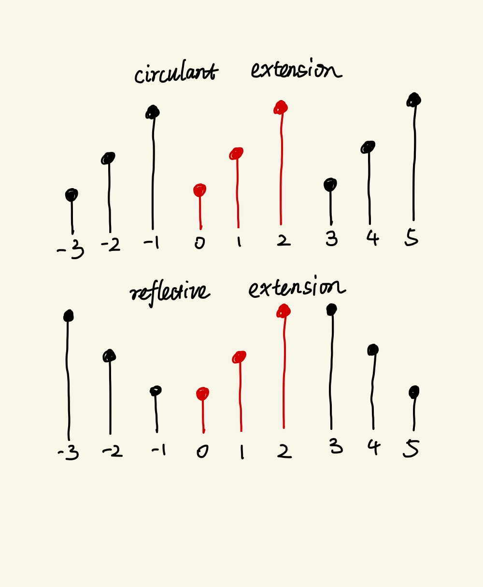

Total variation (TV) denoising, also known as TV regularization or TV filtering, is a powerful technique widely used in various fields, including medical imaging, computer vision, etc. It removes noises while preserving most important structural features. The first image of black hole, captured by Event Horizon Telescope (EHT), was processed and revealed with this technique in 2019. The concept was proposed in 1992 by Rudin, Osher and Fatemi, known as the ROF model which is a continuous form of TV denoising problem.
What is Total Variation
The term, total variation, refers to a mathematical concept that is a little hard to understand for me. Nonrigorously, the TV of a function u(x) is the integral of its derivative magnitude within its bouned domain Ω:
∥u∥TV=∫Ω∣∇u(x)∣dx
For practical use, a discretized version is more favorable. There are two common discretized TVs in literatures, the isotropic and anisotropic TVs. Suppose that u(X) is a function of an order-N tensor X∈RI1×I2×⋯IN, the isotropic TV is defined as:
where ∇Iku is the derivatives along the Ik dimension. The isotropic TV is invariant to rotation of the domain that is if you rotate the image arbitrarily, the isotropic TV would not change.
which is not rotation invariant. There is no difference between the isotropic and anisotropic TVs for 1D signals.
Discrete Derivatives
There are many ways to define derivatives for discretized signals. For better understanding, I will use a 1-d signal u(x) (and its discrete form ui,i=0,1,2,⋯,N−1) as an example to illustrate all these ways. Let ∇xu denote the derivatives of u(x) in the x direction, (∇x+u)i=ui+1−ui denote the forward difference, and (∇x−u)i=ui−ui−1 denote the backward difference. A few definitions of derivatives are:
one-sided difference, (∇xu)i2=(∇x+u)i2
central difference, (∇xu)i2=(((∇x+u)i+(∇x−u)i)/2)2
The one-sided difference (or forward difference) may be the most common way to discretize the derivatives but it’s not symmetric. Although the central difference is symmetric, it is not able to reveal thin and small structures (considering a single point with one and others are zero, the central difference at this point would be zero which is counter-intuitive). The geometric average, minmod difference and upwind discretization are both symmectic and being able to reveal thin structures at the cost of nonlinearity. I will use one-sided difference in the following content.
Since we are dealing with finite signals, special handling is needed on the boundaries. I have seen two common ways to do that in literatures. One is reflective extension and the other is circulant extension. The reflective extention assumes that the signals extend in a reflective way and the circulant extension assumes that the signals extend in a circulant way.

For the reflective extension, the matricized differential operator and its adjoint operator are:
A general TV denoising problem minimizes the following objective function:
uargmin∥u∥TV+2λ∥A(u)−v∥2
where u,v are functions of a given tensor X, A is a linear operator, and λ controls how much smoothing is performed.
1D TV
Let’s make Equation (6) more concise for the 1D case:
u∈RNargmin∥Du∥1+2λ∥Au−v∥22
where A∈RN×N and D is the differential operator defined above.
Iterative Clipping
The iterative clipping method solves the 1D TV denoising problem by solving its dual form.
A useful fact is that the absolute value ∣x∣ can be written as an optimization problem and the l1 norm likewisely$:
∣x∣∥x∥1=∣z∣≤1maxzx=∣z∣≤1maxzTx
where ∣z∣≤1 denotes each element of z is less than or equals to 1.
Let F(u)=∥Du∥1+2λ∥Au−v∥22, the objective function can be written as:
F(u)=∣z∣≤1maxzTDu+2λ∥Au−v∥22
thus the Equation (7) can be written as:
argumin∣z∣≤1maxzTDu+2λ∥Au−v∥22
The minmax theorem is that if the function f(x,y) is concave in x and convex in y, then the following equlity holds:
xmaxyminf(x,y)=yminxmaxf(x,y)
then we can change the order of minmax in Equation (10):
arg∣z∣≤1maxuminzTDu+2λ∥Au−v∥22
which is a dual form of the original problem.
The solution of the inner minimization problem is:
uk+1=(ATA)†(ATv−λ1DTzk)
Substituting Equation (13) back into Equation (12) gives:
arg∣z∣≤1minzTD(ATA)†DTz−2λ(DA†v)Tz
There are many ways to solve this quadratic form, one is by the majorization-minimization (MM) method. Given a function F(x), the MM method chooses an auxiliary function Gk(x) such that Gk(x)≥F(x),Gk(xk)=F(xk), then solves xk+1=argminxGk(x). The sequence xk converges to the minimizer of F(x) when F(x) is convex.
We construct such a function Gk(z) by adding (z−zk)T(αI−D(ATA)†DT)(z−zk) to Equation (14):
It turns out that the method can be accelerated with a smaller α value by contraction mapping principle (basically, it means that there is a fixed point such that f(x)=x). To make zk+α1Duk+1 a contraction function, we need to make sure I−α1D(ATA)†DT is a contraction function. It suggests that α>λ0(D(ATA)†DT)/2, which halves the original value.
If A=I, then Equation (7) becomes the naive TV denoising problem. It turns out that λ0(DDT) is less than 4 regardless of N for both definitions in Equation (4) and (5), thus α=2.3 is an appropriate option for A=I.
Majorization Minimization
We could also derive an algorithm with the MM method directly. Given F(x)=∣x∣ for scalar x, then G(x)=2∣xk∣1x2+21∣xk∣ such that G(x)≥F(x) and G(xk)=F(xk). For the l1 norm, G(x) is:
G(x)=21xTΛk−1x+21∥xk∥1
where Λk=diag(∣xk∣).
A majorizer of the TV cost function in Equation (7) is:
uargmin21uTΛk−1u+21∥uk∥1+2λ∥Au−v∥22
Since the l1 term above is now a constant, it’s easier to derive an explicit solution:
uk+1=(ATA+λ1DTΛk−1D)†ATv
A problem with this iteration form is that as the iterations progress, some values of Λk will go to zero, causing division-by-zero errors. This issue can be solved with the matrix inverse lemma:
The complexity of the algorithm would depends on how quick to solve linear equations (λΛk+D(ATA)DT)x=DA†v. If A=I, then λΛk+DDT is a banded matrix which can be solved fastly.